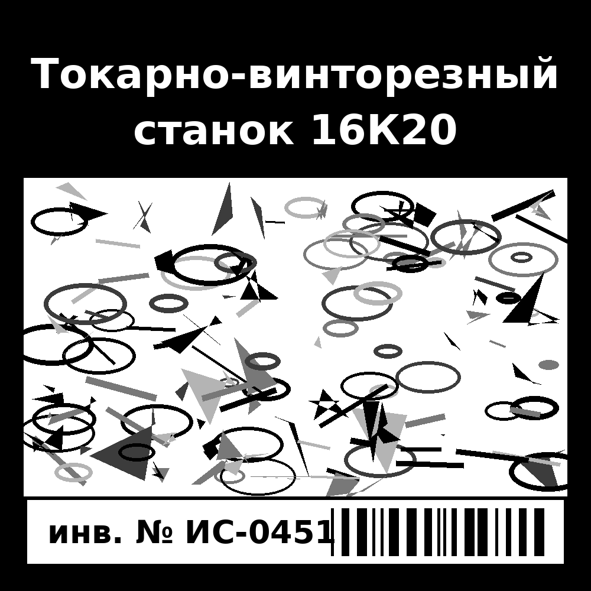
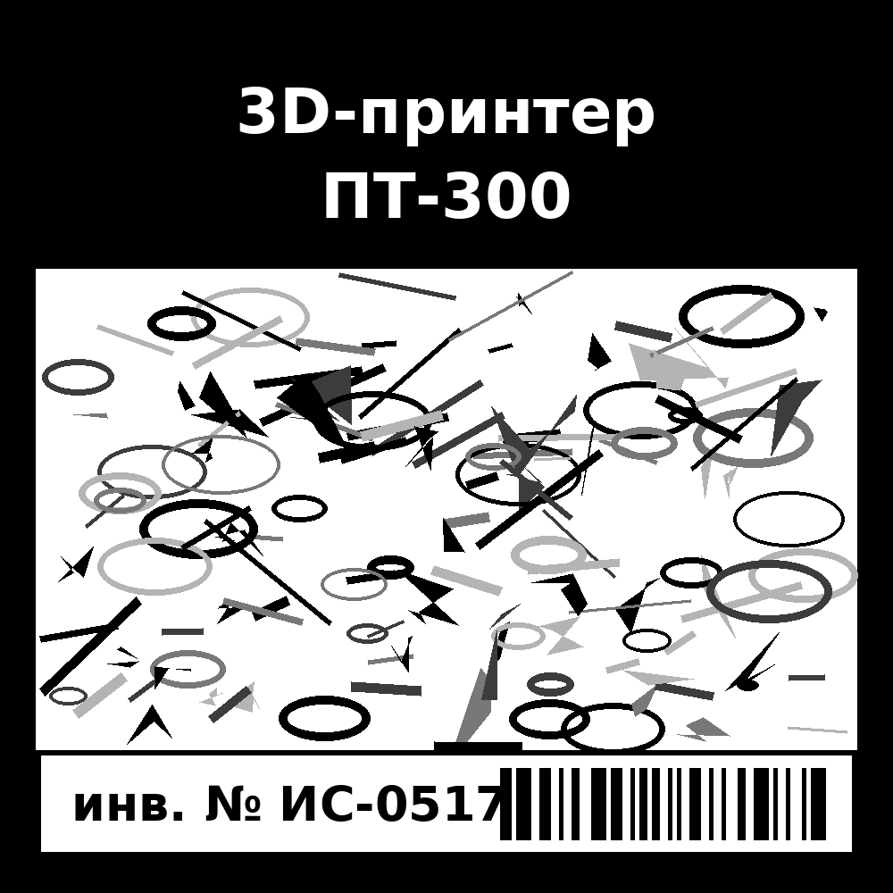

MindAR ищет маркеры по файлу targets.mind: в нём записаны характерные точки каждой картинки. Страница собирает его из трёх картинок в папке markers в таком порядке (он важен — это targetIndex 0, 1, 2):
targets.mind
markers

